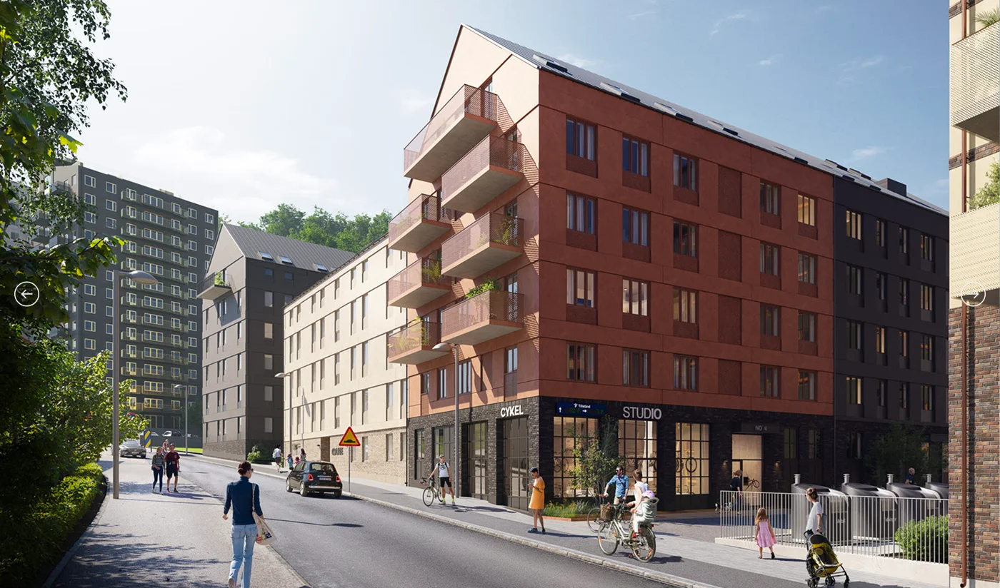

Se projektet
Se projektetKv. 6 Torget
298 hyresrätter · Wallenstam
Större prefabricerade flerbostadshus är BYGR:s kärnkompetens. Vi känner delarna, produktionen och samspelet som krävs när många bostäder ska bli ett kvarter.

Prefabricering ställer krav på planering och samordning.
Vår erfarenhet omfattar projekt med prefabricerade betongstommar, platsgjutna delar, garage och olika fasaduttryck. Vi tar med oss produktionskunskapen i dialogen om utformning och genomförande.
I Kv. 6 Torget kombinerades en svensk prefabricerad betongstomme med ett murat punkthus. I Kv. 10 Hållbarheten möter prefabricerade stomkomponenter ett kvarter med flera huskroppar och delningslägenheter.
Prata prefab med ossSe projektet298 hyresrätter · Wallenstam

Se projektet43 hyresrätter, 12 delningslägenheter · Wallenstam
En idé, en fastighet eller ett konkret projekt?
Låt oss prata om vad vi kan åstadkomma tillsammans.